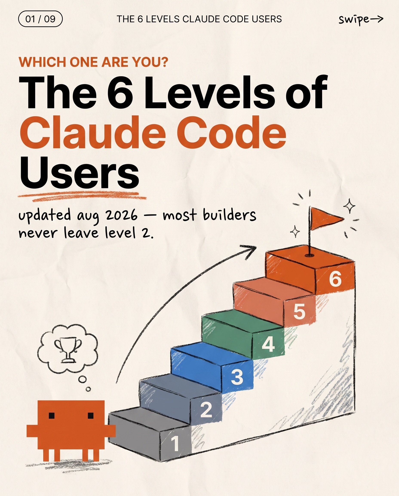
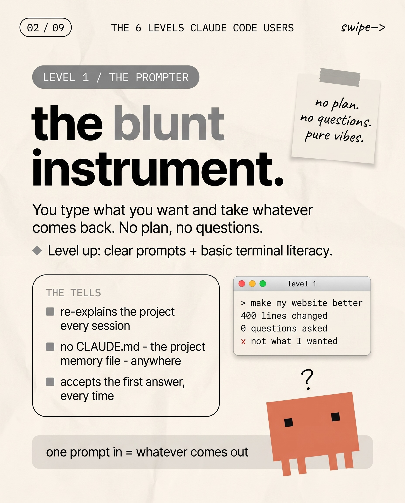
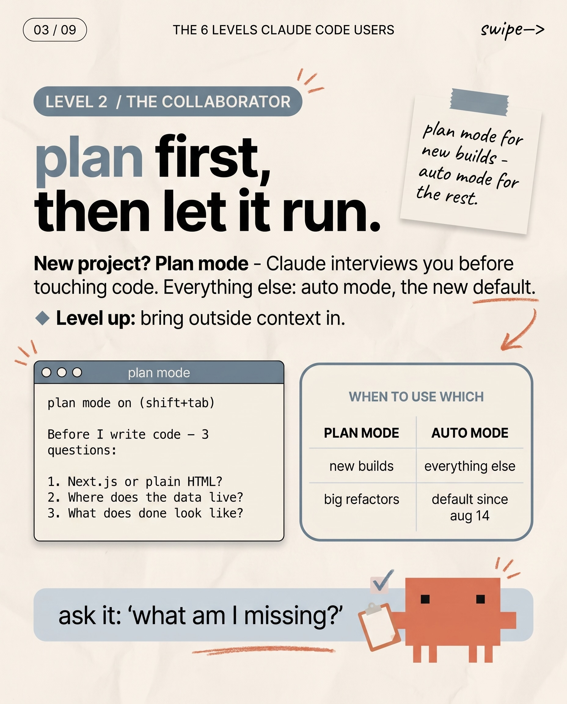
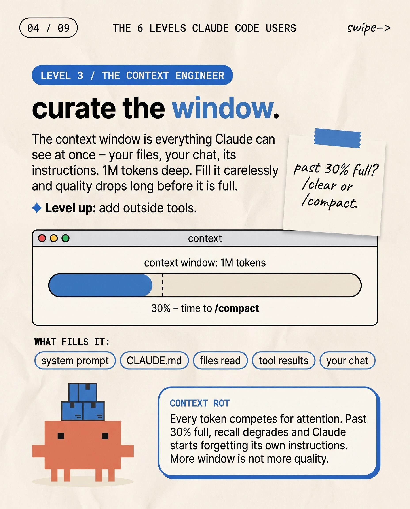
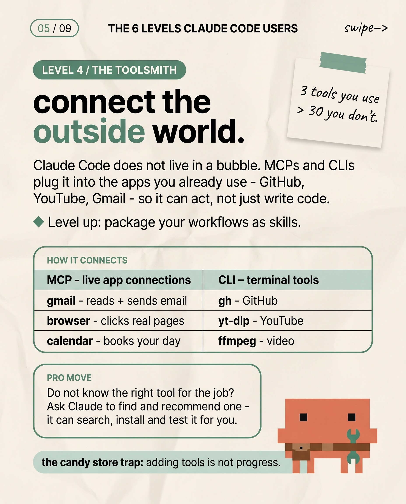
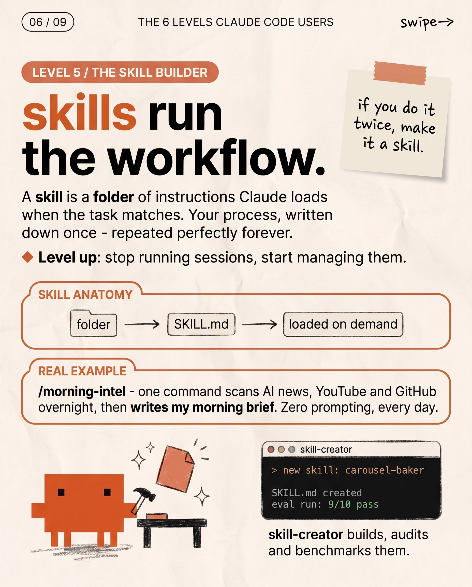
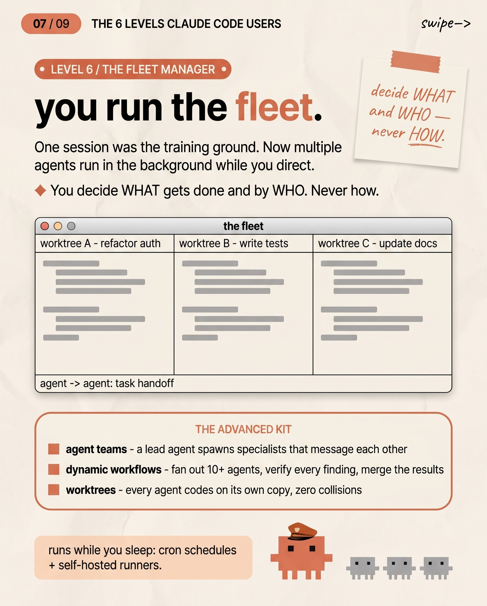
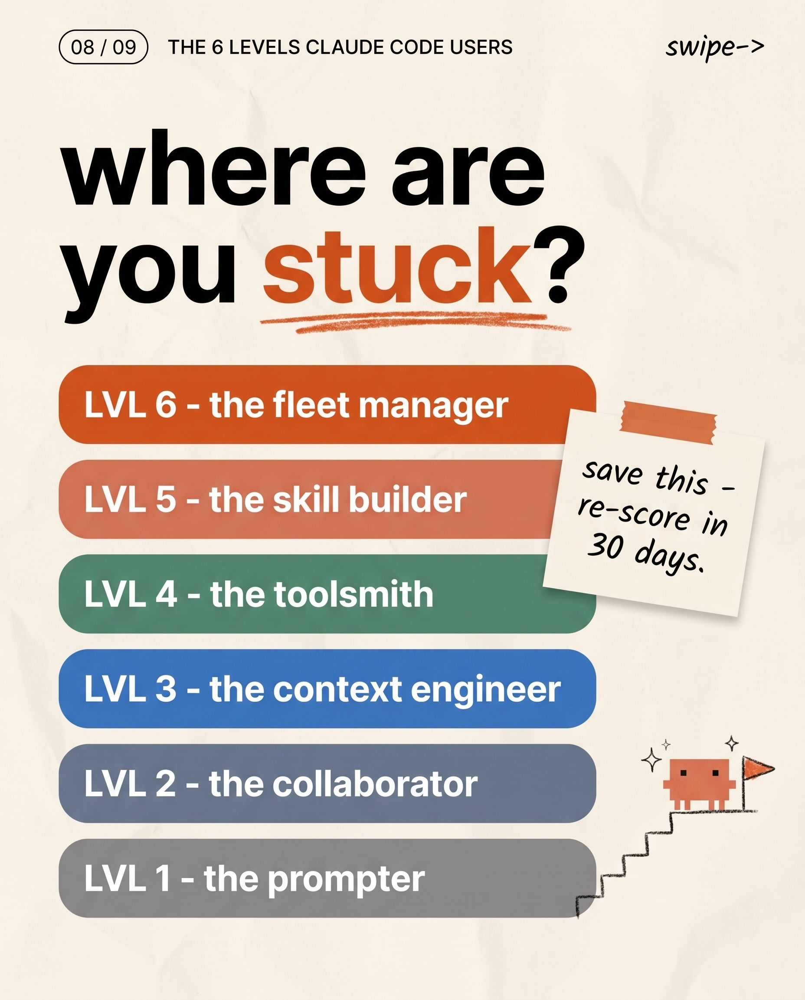

Instagram Post

Comment “agent” to get all my Claude code skills...
carousel (9 slides) (enriched by ClaudeClaw)
Summary
01 / 09 THE 6 LEVELS CLAUDE CODE USERS swipe→ WHICH ONE A... | 02 / 09 THE 6 LEVELS CLAUDE CODE USERS swipe-> LEVEL 1 / ... | 03 / 09 THE 6 LEVELS CLAUDE CODE USERS swipe-> LEVEL 2 / ... | 04 / 09 THE 6 LEVELS CLAUDE CODE USERS swipe-> LEVEL 3 / ... | 05 / 09 THE 6 LEVELS CLAUDE CODE USERS swipe-> LEVEL 4 / ... | 06 / 09 THE 6 LEVELS CLAUDE CODE USERS swipe→ LEVEL 5 / T... | 07 / 09 THE 6 LEVEL...
Caption
Comment “agent” to get all my Claude code skills + guides
1
01 / 09 THE 6 LEVELS CLAUDE CODE USERS swipe→ WHICH ONE ARE YOU? The 6 Levels of Claude Code Users updated aug 2026 — most builders never leave level 2. 1 2 3 4 5 6
An infographic displays a blocky, pixel-art style character looking at a six-step staircase with numbers 1 through 6, leading to a flag and sparkles at the top, while the character thinks of a trophy.
2
02 / 09 THE 6 LEVELS CLAUDE CODE USERS swipe-> LEVEL 1 / THE PROMPTER the blunt instrument. no plan. no questions. pure vibes. You type what you want and take whatever comes back. No plan, no questions. Level up: clear prompts + basic terminal literacy. THE TELLS re-explains the project every session no CLAUDE.md - the project memory file - anywhere accepts the first answer, every time level 1 > make my website better 400 lines changed 0 questions asked x not what I wanted one prompt in = whatever comes out
An infographic slide titled "THE 6 LEVELS CLAUDE CODE USERS" describes "LEVEL 1 / THE PROMPTER" as "the blunt instrument," detailing characteristics of a basic AI code user with accompanying text, a sticky note, a terminal window, and a pixelated orange character with a question mark.
3
03 / 09 THE 6 LEVELS CLAUDE CODE USERS swipe-> LEVEL 2 / THE COLLABORATOR plan first, then let it run. plan mode for new builds - auto mode for the rest. New project? Plan mode - Claude interviews you before touching code. Everything else: auto mode, the new default. Level up: bring outside context in. plan mode plan mode on (shift+tab) Before I write code - 3 questions: 1. Next.js or plain HTML? 2. Where does the data live? 3. What does done look like? WHEN TO USE WHICH PLAN MODE AUTO MODE new builds everything else big refactors default since aug 14 ask it: 'what am I missing?'
An infographic slide titled "LEVEL 2 / THE COLLABORATOR" explains "plan mode" and "auto mode" for Claude code users, featuring text, bullet points, a table, and a small orange robot character holding a clipboard.
4
04 / 09 THE 6 LEVELS CLAUDE CODE USERS swipe-> LEVEL 3 / THE CONTEXT ENGINEER curate the window. The context window is everything Claude can see at once – your files, your chat, its instructions. 1M tokens deep. Fill it carelessly and quality drops long before it is full. Level up: add outside tools. past 30% full? /clear or /compact. context context window: 1M tokens 30% – time to /compact WHAT FILLS IT: system prompt CLAUDE.md files read tool results your chat CONTEXT ROT Every token competes for attention. Past 30% full, recall degrades and Claude starts forgetting its own instructions. More window is not more quality.
An infographic slide explains "Level 3 / The Context Engineer" for Claude users, featuring text, a progress bar representing a "context window," a sticky note with tips, a pixelated character carrying boxes, and a text box about "Context Rot," all on a textured paper background.
5
05 / 09 THE 6 LEVELS CLAUDE CODE USERS swipe-> LEVEL 4 / THE TOOLSMITH connect the outside world. 3 tools you use > 30 you don't. Claude Code does not live in a bubble. MCPs and CLIs plug it into the apps you already use - GitHub, YouTube, Gmail - so it can act, not just write code. Level up: package your workflows as skills. HOW IT CONNECTS MCP - live app connections CLI - terminal tools gmail - reads + sends email gh - GitHub browser - clicks real pages yt-dlp - YouTube calendar - books your day ffmpeg - video PRO MOVE Do not know the right tool for the job? Ask Claude to find and recommend one - it can search, install and test it for you. the candy store trap: adding tools is not progress.
An infographic slide titled "The 6 Levels Claude Code Users" presents information about connecting Claude Code to external tools, featuring text, a table of connections, and a pixel-art character.
6
06 / 09 THE 6 LEVELS CLAUDE CODE USERS swipe→ LEVEL 5 / THE SKILL BUILDER skills run the workflow. if you do it twice, make it a skill. A skill is a folder of instructions Claude loads when the task matches. Your process, written down once - repeated perfectly forever. Level up: stop running sessions, start managing them. SKILL ANATOMY folder SKILL.md loaded on demand REAL EXAMPLE /morning-intel - one command scans AI news, YouTube and GitHub overnight, then writes my morning brief. Zero prompting, every day. skill-creator > new skill: carousel-baker SKILL.md created eval run: 9/10 pass skill-creator builds, audits and benchmarks them.
An infographic explains "Level 5 / The Skill Builder" for Claude code users, detailing what a skill is, its anatomy, a real example, and showing a code snippet and a small illustration of a block character building.
7
07 / 09 THE 6 LEVELS CLAUDE CODE USERS swipe -> LEVEL 6 / THE FLEET MANAGER you run the fleet. One session was the training ground. Now multiple agents run in the background while you direct. You decide WHAT gets done and by WHO. Never how. decide WHAT and WHO — never HOW. the fleet worktree A - refactor auth worktree B - write tests worktree C - update docs agent -> agent: task handoff THE ADVANCED KIT agent teams - a lead agent spawns specialists that message each other dynamic workflows - fan out 10+ agents, verify every finding, merge the results worktrees - every agent codes on its own copy, zero collisions runs while you sleep: cron schedules + self-hosted runners.
An infographic slide titled "THE 6 LEVELS CLAUDE CODE USERS" presents "LEVEL 6 / THE FLEET MANAGER" with text, a sticky note, a diagram showing three "worktree" columns, and a section detailing "THE ADVANCED KIT" with small robot illustrations.
8
08 / 09 THE 6 LEVELS CLAUDE CODE USERS swipe-> where are you stuck? LVL 6 - the fleet manager LVL 5 - the skill builder LVL 4 - the toolsmith LVL 3 - the context engineer LVL 2 - the collaborator LVL 1 - the prompter save this - re-score in 30 days.
An infographic on a crumpled paper-like background asks "where are you stuck?" above a vertical list of six colored rectangular buttons detailing "THE 6 LEVELS CLAUDE CODE USERS," with a small pixelated character climbing stairs towards a flag at the bottom right and a sticky note with text on the right.
9
Chase AI AI workflows · agents · Claude Code Follow Message Comment 'AGENT' To get all my Claude Code skills + guides Save for later Follow · Chase AI
A social media post or profile page displays a user's name, description, action buttons, and a call to action to comment 'AGENT' for Claude Code skills and guides.
All slides






